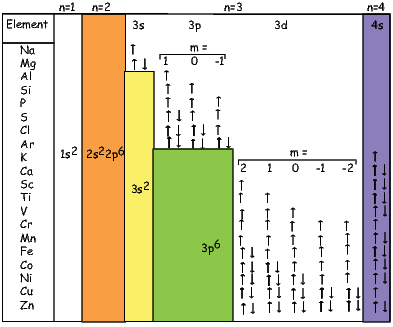
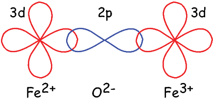
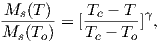
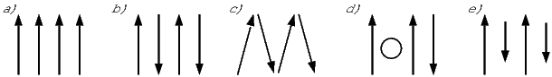

Figure 3.1: Plot of radial distribution and “dot-density” for the 1s electron
shell.
BACKGROUND: For a review of basic quantum mechanics and statistical mechanics, read relevant chapters from an introductory Chemistry text book.
Scientists in the late 19th century thought that it might be possible to exploit the magnetic record retained in accidental records to study the geomagnetic field in the past. Work in the mid 20th century provided the theoretical and experimental basis for presuming that such materials might retain a record of past geomagnetic fields. There are several books and articles that describe the subject in detail (see e.g., the supplemental readings). We present here a brief overview of theories on how rocks get and stay magnetized. We will begin with magnetism at the atomic level caused by electronic orbits and spins giving rise to induced magnetizations. Then we will see how electronic spins working in concert give rise to permanently magnetized substances (like magnetic minerals) making remanent magnetization possible.
We learned in Chapter 1 that magnetic fields are generated by electric currents. Given that there are no wires leading into or out of permanent magnets, you may well ask, “Where are the currents?” At the atomic level, the electric currents come from the motions of the electrons. From here quantum mechanics quickly gets esoteric, but some rudimentary understanding is helpful. In this chapter we will cover the bare minimum necessary to grasp the essentials of rock magnetism.
In Chapter 1 we took the classical (pre-quantum mechanics) approach and suggested that the orbit of an electron about the nucleus could be considered a tiny electric current with a correspondingly tiny magnetic moment. But quantum physics tells us that this “planetary” view of the atom cannot be true. An electron zipping around a nucleus would generate radio waves, losing energy and eventually would crash into the nucleus.
Apparently, this does not happen, so the classical approach is fatally flawed and we must turn to quantum mechanics.
In quantum mechanics, electronic motion is stabilized by the fact that electrons can only have certain energy states; they are quantized. The energy of a given electron can be described in terms of solutions, Ψ, to something called Schrödinger’s wave equation. The function Ψ(r,θ,ϕ) gives the probability of finding an electron at a given position. [Remember from Chapter 2 that r,θ,ϕ are the three spherical coordinates.] It depend on three special quantum numbers (n,l,m):
|
| (3.1) |
The number n is the so-called “principal” quantum number. The Rnl(r) are functions specific to the element in question and the energy state of the electron n. It is evaluated at an effective radius r in atomic units. The Y lm are a fully normalized complex representation of the spherical harmonics introduced in Section 2.2. For each level n, the number l ranges from 0 to n-1 and m from l backwards to -l.
The lowest energy of the quantum wave equations is found by setting n equal to unity and both l and m to zero. Under these conditions, the solution to the wave equation is given by:
|
| (3.2) |
where Z is the atomic number and ρ is 2Zr∕n. Note that at this energy level, there is no dependence of Y on ϕ or θ. Substituting these two equations into Equation 3.1 gives the probability density Ψ for an electron as a function of radius of r. This is sketched as the line in Figure 3.1. Another representation of the same idea is shown in the inset, whereby the density of dots at a given radius reflects the probability distribution shown by the solid curve. The highest dot density is found at a radius of about one atomic unit, tapering off the farther away from the center of the atom. Because there is no dependence on θ or ϕ the probability distribution is a spherical shell. All the l,m = 0 shells are spherical and are often referred to as the 1s, 2s, 3s shells, where the numbers are the energy levels n. A surface with equal probability is a sphere and example of one such shell is shown in Figure 3.2a.
For l = 1, m will have values of -1, 0 and 1 and the Y lm(ϕ,θ)s are given by:

As might be expected, the shells for l = 2 are even more complicated that for l = 1. These shells are called “d” shells and two examples are shown in Figure 3.2c and d.

Returning to the tiny circuit idea, somehow the motion of the electrons in their shells acts like an electronic circuit and creates a magnetic moment. In quantum mechanics, the angular momentum vector of the electron L is quantized, for example as integer multiples of ℏ, the “reduced” Planck’s constant (or h _ 2π where h = 6.63 x 10-34 Js). The magnetic moment arising from the orbital angular momentum is given by:

|
| (3.3) |
This is known as the Bohr magneton.
So far we have not mentioned one last quantum number, s. This is the “spin” of the electron and has a value of ±1 2. The spin itself produces a magnetic moment which is given by 2smb, hence is numerically identical to that produced by the orbit.
Atoms have the same number of electrons as protons in order to preserve charge balance. Hydrogen has but one lonely electron which in its lowest energy state sits in the 1s electronic shell. Helium has a happy pair, so where does the second electron go? To fill in their electronic shells, atoms follow three rules:
Each unpaired spin has a moment of one Bohr magneton mb. The elements with the most unpaired spins are the transition elements which are responsible for most of the paramagnetic behavior observed in rocks. For example, in Figure 3.3 we see that Mn has a structure of: (1s22s22p63s23p6)3d54s2, hence has five unpaired spins and a net moment of 5 mb. Fe has a structure of (1s22s22p63s23p6)3d64s2 with a net moment of 4 mb, In minerals, the transition elements are in a variety of oxidation states. Fe commonly occurs as Fe2+ and Fe3+. When losing electrons to form ions, transition metals lose the 4s electrons first, so we have for example, Fe3+ with a structure of (1s22s22p63s23p6)3d5, or 5 mb. Similarly Fe2+ has 4 mb and Ti4+ has no unpaired spins. Iron is the main magnetic species in geological materials, but Mn2+ (5 mb) and Cr3+ (3 mb) occur in trace amounts.
We have learned that there are two sources of magnetic moments in electronic motions: the orbits and the (unpaired) spins. These moments respond to external magnetic fields giving rise to an induced magnetization, a phenomenon alluded to briefly in Chapter 1. We will consider first the contribution of the electronic orbits.

The angular momentum of electrons is quantized in magnitude but also has direction (see L in Figure 3.4). The angular momentum vector has an associated magnetic moment vector mb. A magnetic field H exerts a torque on the moment, which nudges it (and the momentum vector associated with it) to the side (ΔL). L therefore will precess around the magnetic field direction, much like a spinning top precesses around the direction of gravity. The precession of L is called Larmor precession.
The changed momentum vector from Larmor precession in turn results in a changed magnetic moment vector Δm. The sense of the change in net moment is always to oppose the applied field. Therefore, the response of the magnetic moments of electronic orbitals creates an induced magnetization MI that is observable outside the substance; it is related to the applied field by:
We learned in Chapter 1 that the proportionality between induced magnetization and the applied field is known as the magnetic susceptibility. The ratio MI∕H for the response of the electronic orbitals is termed the diamagnetic susceptibility χd; it is negative, essentially temperature independent and quite small. This diamagnetic response is a property of all matter, but for substances whose atoms possess atomic magnetic moments, diamagnetism is swamped by effects of magnetic fields on the atomic magnetic moments. In the absence of unpaired electronic spins, diamagnetic susceptibility dominates the magnetic response. Common diamagnetic substances include quartz (SiO2), calcite (CaCO3) and water (H2O). The mass normalized susceptibility of quartz is -0.62 x 10-9 m3kg-1 to give you an idea of the magnitudes of these things.
 (a) versus a = mB∕kT.) b) Paramagnetic magnetization as a
function of temperature (Curie Law).
(a) versus a = mB∕kT.) b) Paramagnetic magnetization as a
function of temperature (Curie Law).In many geological materials, the orbital contributions cancel out because they are randomly oriented with respect to one another and the magnetization arises from the electronic spins. We mentioned that unpaired electronic spins behave as magnetic dipoles with a moment of one Bohr magneton. In the absence of an applied field, or in the absence of the ordering influence of neighboring spins which are known as exchange interactions, the electronic spins are essentially randomly oriented. An applied field acts to align the spins which creates a net magnetization equal to χpH where χp is the paramagnetic susceptibility. For any geologically relevant conditions, the induced magnetization is linearly dependent on the applied field. In paramagnetic solids, atomic magnetic moments react independently to applied magnetic fields and to thermal energy. At any temperature above absolute zero, thermal energy vibrates the crystal lattice, causing atomic magnetic moments to oscillate rapidly in random in orientations. In the absence of an applied magnetic field, atomic moments are equally distributed in all directions with a resultant magnetization of zero.
A useful first order model for paramagnetism was worked out by P. Langevin in 1905. (Of course in messy reality things are a bit more complicated, but Langevin theory will work well enough for us at this stage.) Langevin theory is based on a few simple premises:
 | (3.4) |
Magnetic energy is at a minimum when the magnetic moment is lined up with the magnetic field.
Consider an atomic magnetic moment, (m = 2mb = 1.85×10-23 Am2), in a magnetic field of 10-2 T, (for reference, the largest geomagnetic field at the surface is about 65 μT – see Chapter 2). The aligning energy is therefore mB = 1.85 × 10-25 J). However, thermal energy at 300K (traditionally chosen as a temperature close to room temperature providing easy arithmetic) is Boltzmann’s constant times the temperature, or about 4 x 10-21 J. So thermal energy is several orders of magnitude larger than the aligning energy and the net magnetization is small even in this rather large (compared to the Earth’s field) magnetizing field.
Using the principles of statistical mechanics, we find that the probability density of a particular magnetic moment having a magnetic energy of Em is given by:
|
| (3.5) |
From this we see that the degree of alignment depends exponentially on the ratio of magnetic energy to thermal energy. The degree of alignment with the magnetic field controls the net magnetization M. When spins are completely aligned, the substance has a saturation magnetization Ms. The probability density function leads directly to the following relation (derived in Appendix A.2.1):
![M 1
--- = [coth a - -] = L(a).
Ms a](WebBook372x.png) | (3.6) |
where a = mB∕kT. The function enclosed in square brackets is known as the
Langevin function ().
Equation 3.6 is plotted in Figure 3.5a and predicts several intuitive results: 1)
M = 0 when B = 0 and 2) M∕Ms = 1 when the applied magnetic field is infinite.
Furthermore, M is some 90% of Ms when mB is some 10-20 times kT.
When kT >> mB,(a) is approximately linear with a slope of ~ 1∕3. At
room temperature and fields up to many tesla, (a) is approximately
mB∕3kT. If the moments are unpaired spins (m = mb), then the maximum
magnetization possible (Ms) is given by the number of moments N, their
magnitude (mb) normalized by the volume of the material v or Ms = Nmb∕v,
and

Please note that we have neglected all deviations from isotropy including quantum mechanical effects as well as crystal shape, lattice defects, and state of stress. These complicate things a little, but to first order the treatment followed here provides a good approximation. We can rewrite the above equation as:
 | (3.7) |
To first order, paramagnetic susceptibility χp is positive, larger than diamagnetism and inversely proportional to temperature. This inverse T dependence (see Figure 3.5b) is known as Curie’s law of paramagnetism. The paramagnetic susceptibility of, for example, biotite is 790 x 10-9 m3 kg-1, or about three orders of magnitude larger than quartz (and of the opposite sign!).
We have considered the simplest case here in which χ can be treated as a scalar and is referred to as the bulk magnetic susceptibility χb. In detail, magnetic susceptibility can be quite complicated. The relationship between induced magnetization and applied field can be affected by crystal shape, lattice structure, dislocation density, state of stress, etc., which give rise to possible anisotropy of the susceptibility. Furthermore, there are only a finite number of electronic moments within a given volume. When these are fully aligned, the magnetization reaches saturation. Thus, magnetic susceptibility is both anisotropic and non-linear with applied field.

Some substances give rise to a magnetic field in the absence of an applied field. This magnetization is called remanent or spontaneous magnetization, also loosely known as ferromagnetism (sensu lato). Magnetic remanence is caused by strong interactions between neighboring spins that occur in certain crystals.
The so-called exchange energy is minimized when the spins are aligned parallel or anti-parallel depending on the details of the crystal structure. Exchange energy is a consequence of the Pauli exclusion principle (no two electrons can have the same set of quantum numbers). In the transition elements, the 3d orbital is particularly susceptible to exchange interactions because of its shape and the prevalence of unpaired spins, so remanence is characteristic of certain crystals containing transition elements with unfilled 3d orbitals.
In oxides, oxygen can form a bridge between neighboring cations which are otherwise too far apart for direct overlap of the 3d orbitals in a phenomenon known as superexchange. In Figure 3.6 the 2p electrons of the oxygen are shared with the neighboring 3d shells of the iron ions. Pauli’s exclusion principle means that the shared electrons must be antiparallel to each of the electrons in the 3d shells. The result is that the two cations are coupled. In the case shown in Figure 3.6 there is an Fe2+ ion coupled antiparallel to an Fe3+ ion. For two ions with the same charge, the coupling will be parallel. Exchange energies are huge, equivalent to the energy associated with the same moment in a field of the order of 1000 T. [The largest field available in the Scripps paleomagnetic laboratory is about 2.5 T, and that only fleetingly.]
As temperature increases, crystals expand and exchange becomes weaker. Above a temperature characteristic of each crystal type (known as the Curie temperature Tc), cooperative spin behavior disappears entirely and the material becomes paramagnetic.

While the phenomenon of ferromagnetism results from complicated interactions of neighboring spins, it is useful to think of the ferromagnetic moment as resulting from a quasi-paramagnetic response to a huge internal field. This imaginary field is termed the Weiss molecular field Hw. In Weiss theory, Hw is proportional to the magnetization of the substance, i.e.,

where β is the constant of proportionality. The total magnetic field that the substance experiences is:
where H is the external field. By analogy to paramagnetism, we can substitute a = μomb(Htot)∕kT) for H in Langevin function:
|
| (3.8) |
For temperatures above the Curie temperature Tc (i.e. T - Tc > 0) there is by
definition no internal field, hence βM is zero. Substituting Nmb∕v for Ms, and
using the low-field approximation for (a), Equation 3.8 can be rearranged to
get:
 | (3.9) |
Equation 3.9 is known as the Curie-Weiss law and governs ferromagnetic susceptibility above the Curie temperature (dashed line in Figure 3.7).
Below the Curie temperature Hw >> H; we can neglect the external field H and get:
Substituting again for Ms and rearranging, we get:
|
| (3.10) |
where Tc is the Curie temperature and is given by:
We have treated ferromagnetism from a classical point of view and this is strictly incorrect because ferromagnetism results primarily from quantum mechanical phenomena. The primary difference between the classical derivation and the quantum mechanical one lies in the fact that in quantum mechanics, only certain angles of the magnetic moments are allowed, as opposed to all directions in Langevin theory. In the end, the predictions of magnetization as a function of temperature are different in detail. The end product of the quantum mechanical treatment (see Dunlop and Özdemir, 1997) is that the variation of saturation magnetization as a function of temperature can be reasonably well approximated (near the Curie Temperature, Tc) by a normalized power law variation:
![Ms(T ) Tc - T γ
M--(T-) = [T---T--],
s o c o](WebBook385x.png) | (3.11) |
where γ is 0.5 from simple molecular field theory and To is absolute zero (in kelvin). Dunlop and Özdemir (1997) cite a value of around 0.43 for γ, but the data sets cited by Dunlop and Özdemir (1997; e.g., Figure 3.5 on page 52) are actually best-fit with values for γ of about 0.36 – 0.39 (see Figure 3.8). These curves have been normalized by their inferred curie Temperatures which are around 565∘C (data of B. Moskowitz, cited in Banerjee, 1991).

As we have seen, below the Curie temperature, certain crystals have a permanent (remanent) magnetization resulting from the alignment of unpaired electronic spins over a large area within the crystal. Spins may be either parallel or anti-parallel; the sense of spin alignment is controlled entirely by crystal structure. The energy term associated with this phenomenon is the exchange energy. There are three categories of spin alignment: ferromagnetism (sensu stricto), ferrimagnetism and antiferromagnetism (see Figure 3.9).

In ferromagnetism (sensu stricto, Figure 3.9a), the exchange energy is minimized when all the spins are parallel, as occurs in pure iron. When spins are perfectly antiparallel (antiferromagnetism, Figure 3.9b), there is no net magnetic moment, as occurs in ilmenite. Occasionally, the antiferromagnetic spins are not perfectly aligned in an antiparallel orientation, but are canted by a few degrees. This spin-canting (Figure 3.9c) gives rise to a weak net moment, as occurs in hematite, a common magnetic mineral (see Chapter 6). Also, antiferromagnetic materials can have a net moment if spins are not perfectly compensated owing to defects in the crystal structure, as occurs in fine-grained hematite. The uncompensated spins result in a so-called defect moment (Figure 3.9d). We note in passing that the temperature at which spins become disordered in antiferromagnetic substances is termed the Néel temperature. In ferrimagnetism, spins are also aligned antiparallel, but the magnitudes of the moments in each direction are unequal, resulting in a net moment (Figure 3.9e).
In figures like Figure 3.9, electronic spins are depicted as being simply aligned with some minimum energy direction (aligned with the field, or along some easy axis). Yet we already know about the paramagnetic effect of misalignment through random thermal fluctuations. We learned that an external magnetic field generates a torque on the electronic spins, and in isolation, a magnetic moment will respond to the torque in a manner similar in some respects to the way a spinning top responds to gravity: the magnetic moment will precess about the applied field direction, spiraling in and come to a rest parallel to it (Figure 3.10a). Because of the strong exchange coupling in ferromagnetic phases, spins tend to be aligned parallel (or antiparallel) to one another and the spiralling is done in a coordinated fashion, with neighboring spins as parallel as possible to one another (Figure 3.10b). This phenomenon is known as a spin wave.
SUPPLEMENTAL READINGS: O’Reilly (1984), Chapter 3.1; Dunlop and Özdemir (1997), Chapter 2.1 to 2.7.
Problem 1
a) Given one Bohr magneton (mb) in the Earth’s field (40 μT), write a program using python that calcuates magnetostatic interaction energy (-mbB cosθ) for angles 0→ 180∘. Make a plot of this with the matplotlib module in Python (see online PmagPy documentation).
b) Calculate the thermal energy at room temperature (300K). How does this compare with the interaction energy?
Problem 2
Fayalite (Fe2SiO4) is a paramagnetic solid with magnetic susceptibility χ = 4.4 x 10-4 (cgs units) at 0∘C (= 273K). A single crystal of fayalite has a volume of 2 cm3. This crystal is placed in a magnetic field, H = 10 oe at 0∘C. What is the resulting induced magnetic moment m of this crystal?
a) Do this problem first in cgs units. Then convert your answer to SI using the conversion factors in Table 1.1 in Chapter 1.
b) Do the problem again by first converting all the parameters into SI units. Check your answer by converting the SI answer that you get back to cgs. You should get the same answer (but you would be surprised how many people do this wrong).
Problem 3
If fayalite is placed in a magnetic field H= 100 oe at a temperature of 500∘C (= 773K), what is the resulting magnetization, M?
Problem 4
MnS is a paramagnetic solid. At 300K there are 4 x 1028 molecules of MnS per m3. Look up the number of unpaired spins for the cationic magnetic moment of Mn2+ in the text and find the paramagnetic susceptibility, χ, of MnS at 300K?
Problem 5
Try the examples for curie.py in the PmagPy software package. What is the Curie temperature of the material?